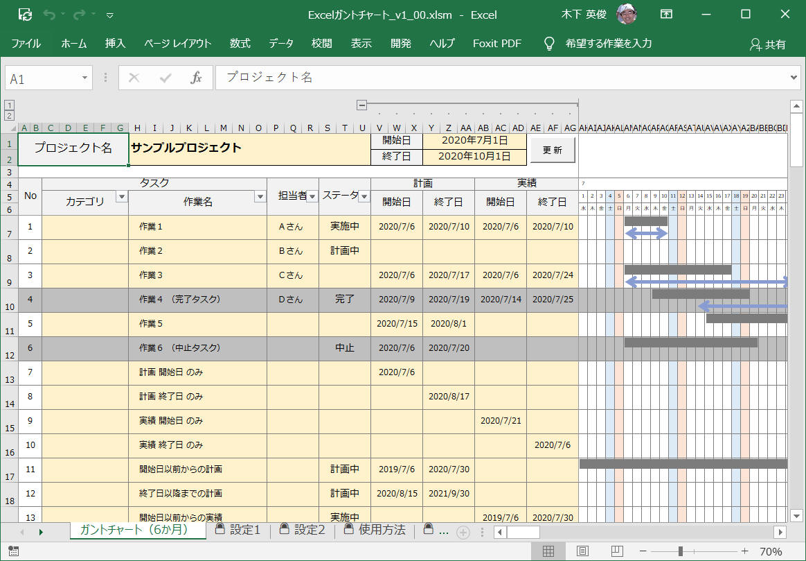
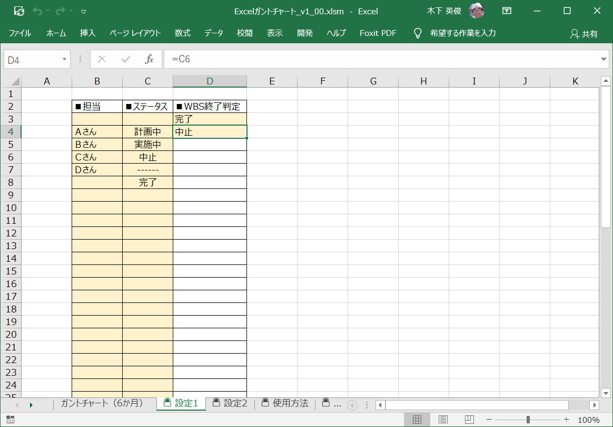
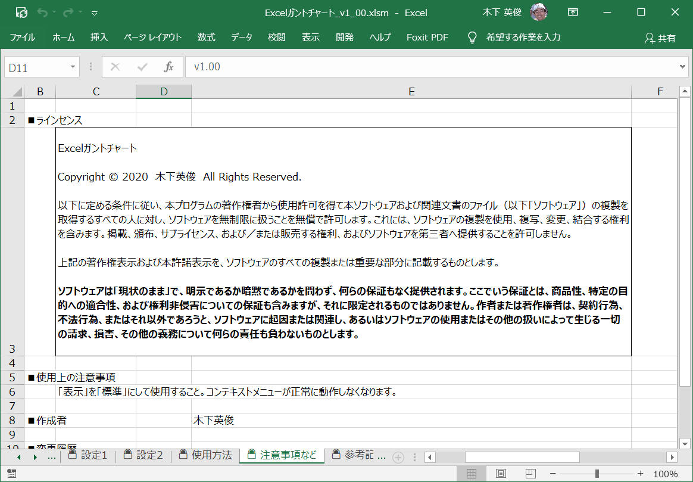

「Excelガントチャート」を自作したので、以下でこのソフトウェアおよび作り方を紹介します。
仕事でもいろいろとガントチャートツールを利用しました。
が、少しずつ何かが足りませんでした。
私が強く求めるのは以下のような機能でした。
(1) 計画/実績 を記載できること。
(2) バーチャート（ガントチャート）を表示すること。またこの更新が楽であること。
(3) 分解能は
1日 を基本とすること。
(4) 関係者へ配布できること。（ライセンスが無料であること、と同意。この観点でExcelファイルが優れている）
(5)
動作が軽快であること。（この観点では、MS Project、ProjectLibre などが秀逸。多くのExcelガントチャートはこれがNG。）
(6)
少なくともWBSを100程度は記載できること。改ページ可。
(7) ６カ月程度のスケジュールを一画面に記載できること。
1. 機能概要
2. ***
3. ***
サンプルプログラム
参考
こんな感じの「Excelガントチャート」ツールを作っていきます。
図．全体図
図．拡大図

図．スケジュール更新をコンテキストメニューから行う様子

図．設定１

図．設定２

図．注意事項など

[概要]
[環境]
| コンパイラ : | Visual Studio 2019 pro., | Version 16.6.0 |
| OS: | Windows10 home, | Version 1909 |
[作成結果] 作成したプログラムの様子を動画で以下に示します。
[プログラムソース "***.cpp"]
[概要]
[環境]
| コンパイラ : | Visual Studio 2019 pro., | Version 16.6.0 |
| OS: | Windows10 home, | Version 1909 |
[作成結果] 作成したプログラムの様子を動画で以下に示します。
[プログラムソース "***.cpp"]
サンプルプログラム ダウンロード
記載： 木下英俊
- 2020年07月07日 新規作成